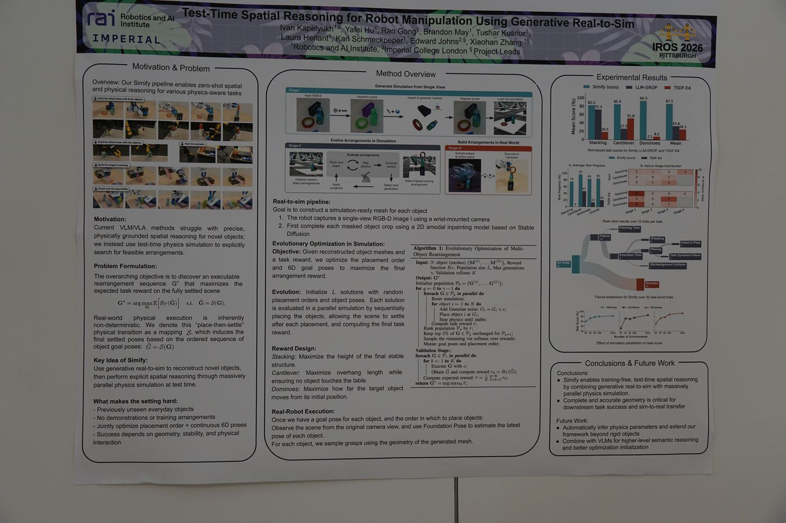
Simlify · Imperial and UCLA
Real to sim spatial reasoning from a single view, with Edward Johns on the author list.
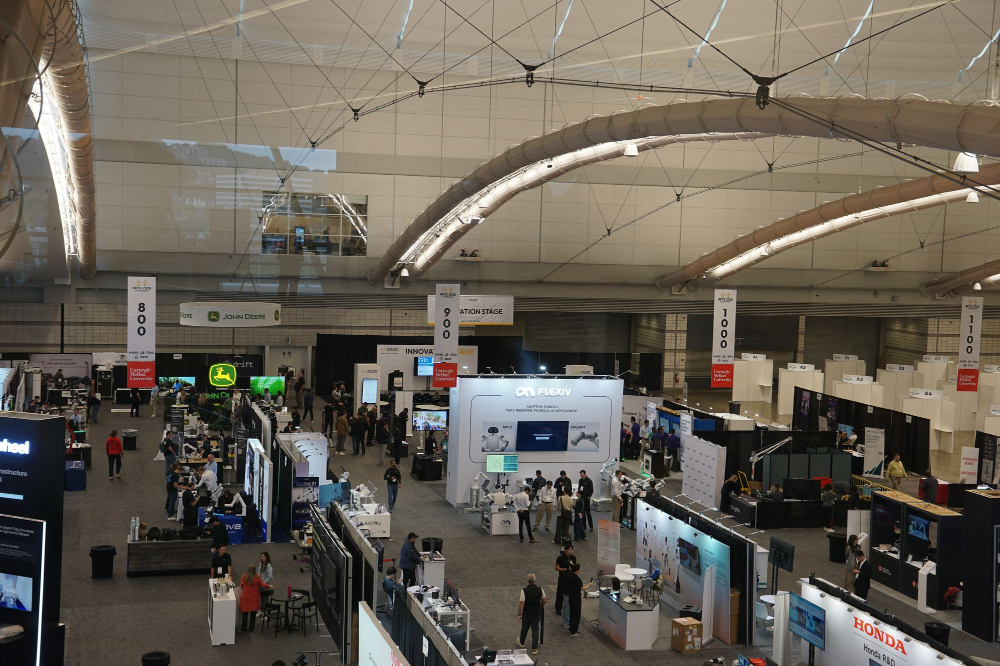
IEEE / RSJ · 27 September to 1 October 2026
Pittsburgh spent a century making steel. This week it made a convincing case that it now makes robots.
The 38th IEEE/RSJ International Conference on Intelligent Robots and Systems ran at the David L. Lawrence Convention Center on the Allegheny riverfront. Howie Choset of Carnegie Mellon chaired. Ross L. Hatton of Oregon State ran the program. More than 1,900 contributed papers each got both a talk and a poster. There were 170 plus exhibitors, 19 keynotes, three plenaries, 86 workshops and nine competitions. The city calls itself Roboburgh, and for five days the hall felt like the thesis statement.
I was there with our paper RTFF, Random to Target Fabric Flattening Policy using Dual Arm Manipulator (paper #3269), joint work with Kai Tang (The University of Hong Kong), Hang Xu (JD.com), Fuyuki Tokuda (Tohoku University), Norman C. Tien (HKU) and Kazuhiro Kosuge (City University of Hong Kong). Kai and I share first authorship.
Monday’s plenary on start ups and entrepreneurship put Vijay Kumar, Andrea Thomaz of Diligent Robotics and others on the Hall C stage, with Lisa Chai and Henrik I. Christensen moderating. Wednesday closed the scientific programme with the debate the organising committee had teased all year. Should robots be generalists or specialists?
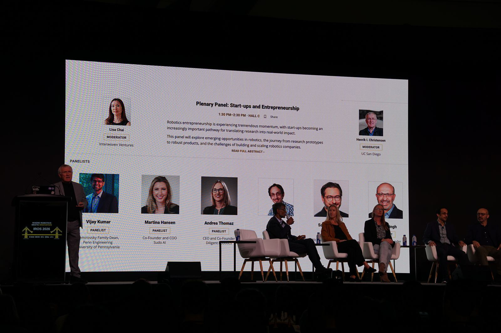
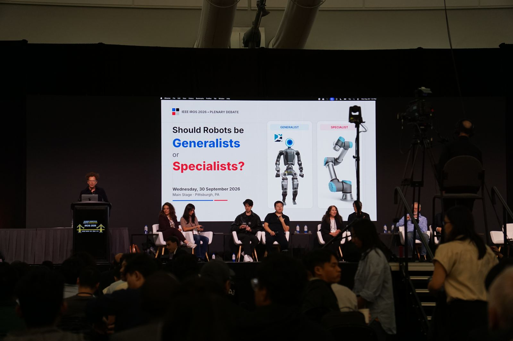
Walking the humanoid aisle, it is hard not to be impressed by how far the form has come. Bodies that once struggled to stay upright now sell athletic competence as a product demo. Unitree G1 clusters have done kung fu, drunken boxing and coordinated falls on China’s Spring Festival Gala. EngineAI’s T800 kicks and spars in a ring, including at IROS. MagicLab has danced with human performers. Galbot sustains humanoid tennis rallies with whole body planning. The motion control is real, and it is evolving fast.
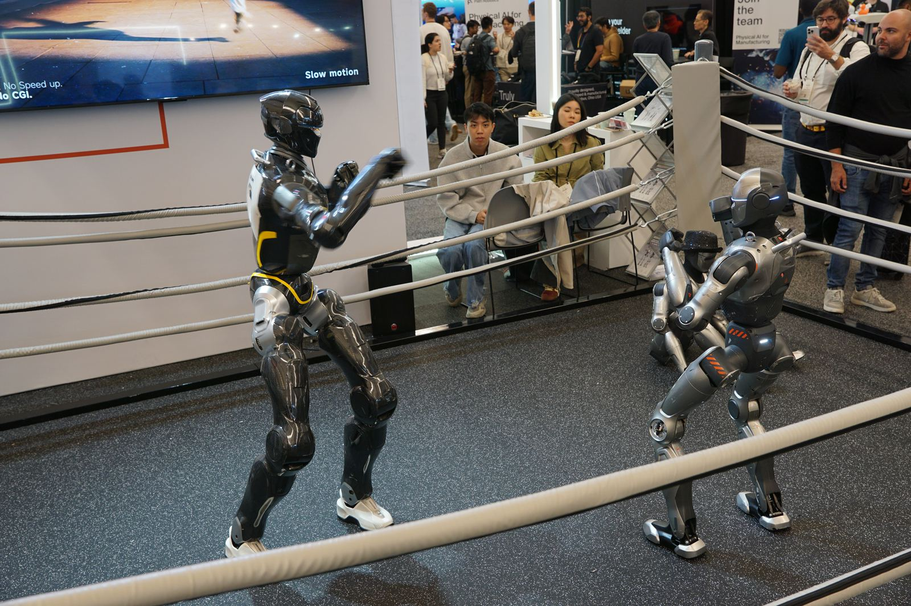
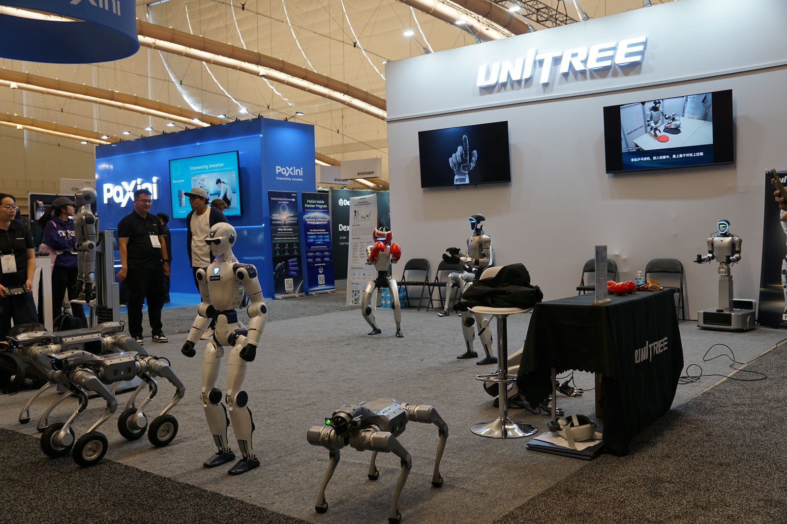
What those demos do not settle is household generality. A robot that can punch or dance on a flat stage still struggles with daily chores such as laundry, cooking or clearing a cluttered table. The reason is that environment dynamics change from place to place. Kitchens differ in layout, lighting, object sets and clutter. Clothes deform differently from house to house. The same action sequence that works in one demo cell fails when furniture, friction and human habits shift. Stage routines are closed world performances. Homes are open world, non stationary, and full of contact that vision alone does not solve.
That is why I leave IROS on the specialist side of the plenary. Robot vacuums, warehouse AMRs, surgical arms, force controlled cobots such as Flexiv, and even our own RTFF fabric policy are ergonomically and algorithmically designed for a narrow job, and they already ship value. A Roomba does not need a humanoid torso. It needs a morphology and a controller matched to floors. Specialists win when the task geometry is stable.
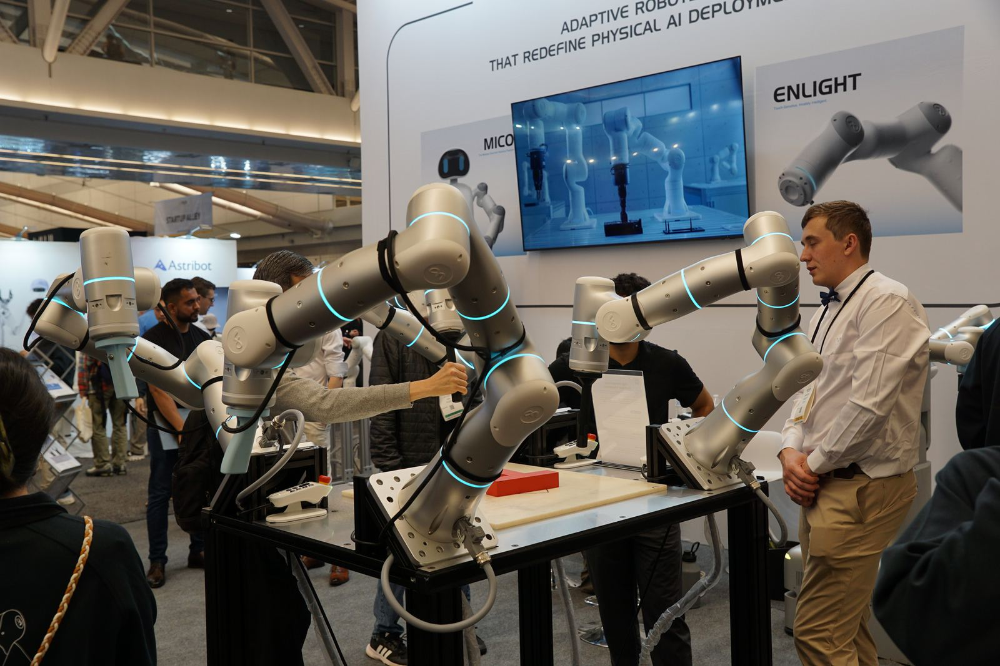
Humanoids still matter where the world is built for people and the working conditions are poor. Warehouses, factories and fulfilment centres are the honest use case. Amazon’s aisle, with yellow automation beside Digit class picking, makes that pitch clear. In those spaces a general purpose body can share tools, aisles and totes with humans without redesigning the building. The point is not humanoid everywhere. It is humanoid where human form is the constraint, and specialist machines everywhere else.
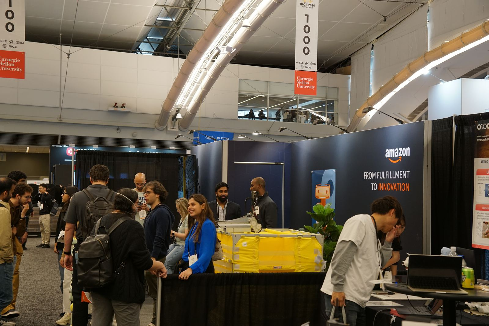
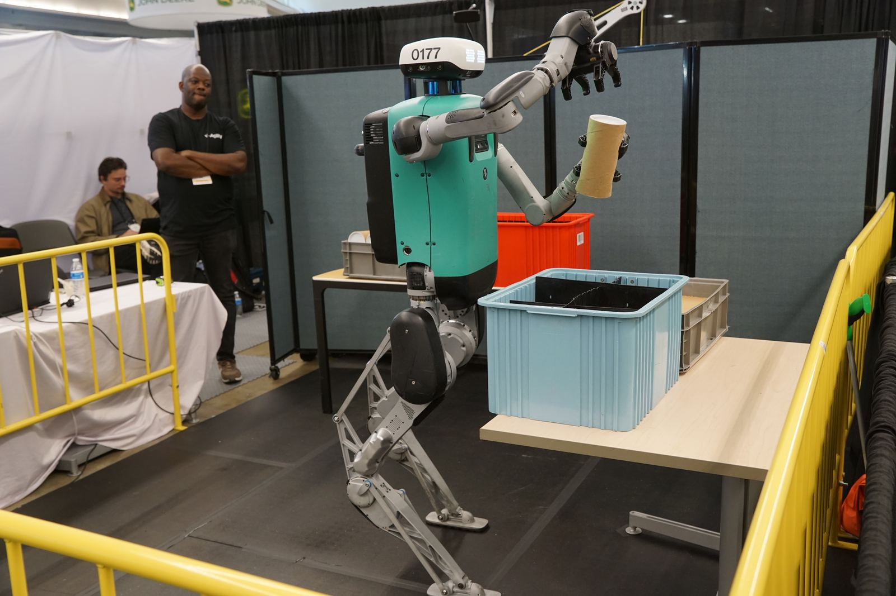
Humanoids for harsh, human shaped workplaces. Specialists such as vacuums, arms and fabric policies for the rest.
Garment production wants a robot that can take a crumpled panel and lay it flat in a specified pose for sewing, cutting or printing. Flattening and alignment fight each other. Smooth out a wrinkle and the cloth walks. Shove it back into place and you raise new folds. Depth cameras also lose the fabric under the gripper.
RTFF treats both the current cloth and the user specified target as the same CAD template mesh. Wrinkle height and pose error become vertex discrepancies, with no registration step. A graph attention network predicts that mesh from RGB D even when the arm occludes the panel. A Mesh Action Chunking Transformer, trained on a small dual arm teleoperation set, does the coarse flatten and align. Position based visual servoing finishes once the cloth is dual grasped and nearly flat.
Drop the mesh and the policy fails. Drop visual servoing and both error and variance jump. Trained on one fabric, the same policy transferred to unseen materials and an 80 percent scale. Kai gave the talk on Wednesday afternoon in Learning Priors for Specialized Manipulation Skills in rooms 411 and 412, around 15:57. We stood the poster at Pod C11 West from 16:30 to 18:00.
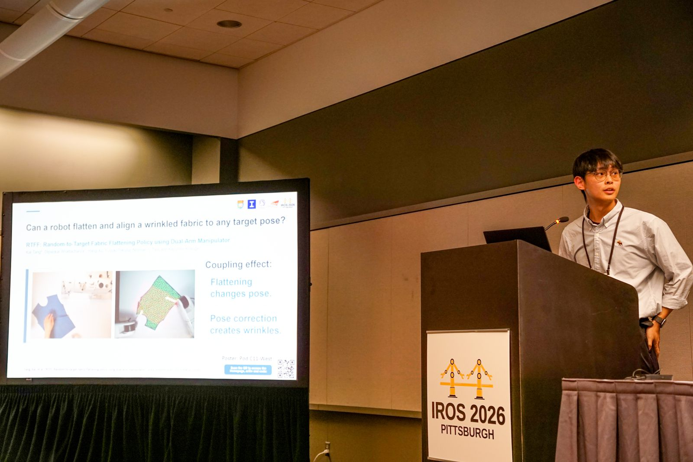
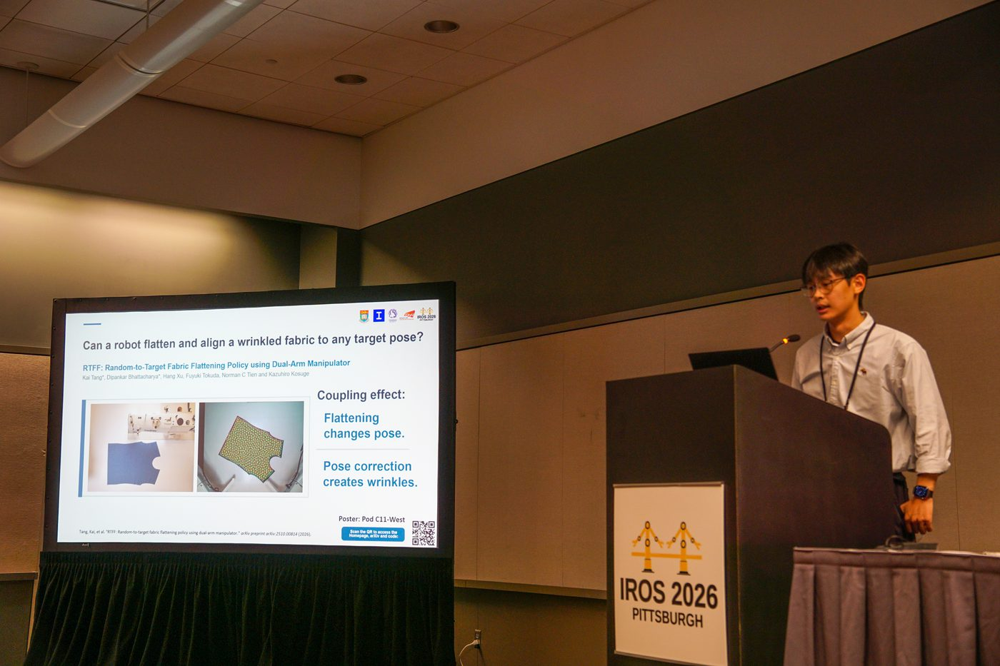
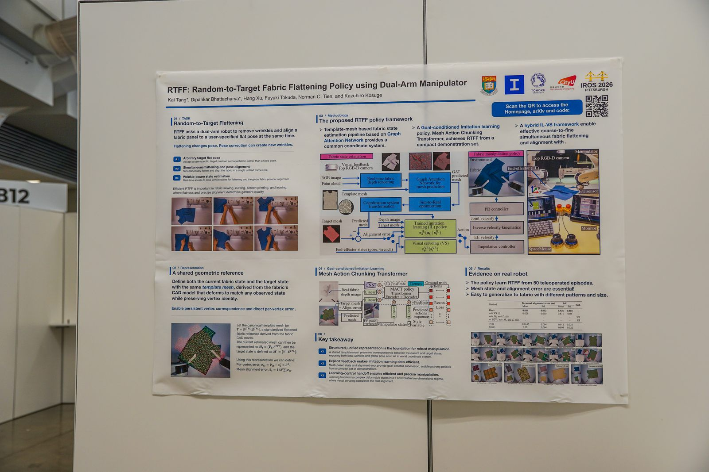
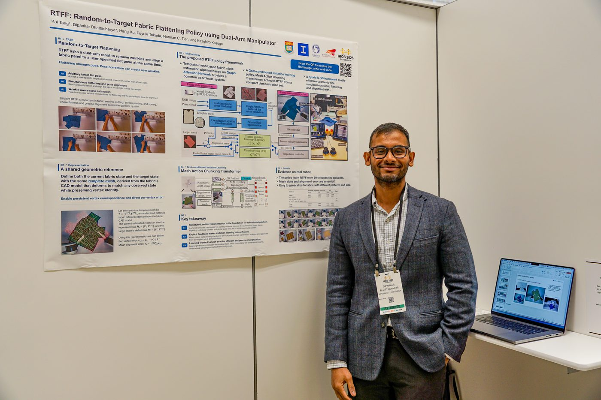
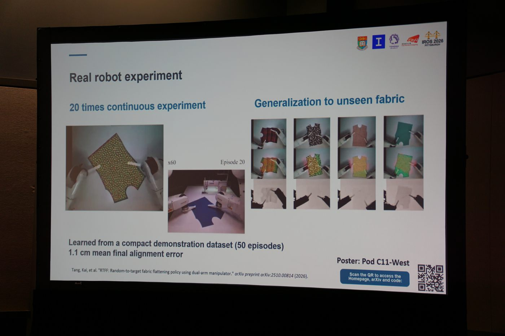
The aisle sorted itself into four kinds of work. Below is what each company I photographed was actually selling, then the photo gallery for that category. Open More images when I took a sequence. All 222 frames are in the album.
Unitree Robotics (booth 500) filled the densest stand with G1 class bipeds, a boxing humanoid, wheeled leg quadrupeds and manipulation demos. Amazon (booth 1127, silver sponsor) showed fulfilment automation and Digit class biped picking for warehouse work. Sharpa (booth 514) ran a teleoperated bartender with VR and haptic hands. Booster Robotics lined up small research and education bipeds with outdoor jogging footage. EngineAI put T800 class bodies in a live boxing ring and is behind the URKL fighting league. Galbot (gold sponsor) kept high dynamic motion going and took a category award for humanoid tennis learned from imperfect human motion. Astribot used IROS for the North American debut of the T1 upper body platform. PAL Robotics (booth 1005) brought TIAGo Pro Arm for manipulation research along with their service robot family. Dexmate pitched research humanoids with plug and play teleoperation. ROKAE showed industrial, collaborative and embodied AI robots including humanoid form factors. Rainbow Robotics (booth 835) combined a quadruped, dual arm mobile manipulator and VR teleoperation. Sony (booth 1129) opened aibo to researchers through an SDK tied to Isaac Sim and Isaac Lab. I also stopped by the RAI Institute (booth 1102) for their Ultra Mobility Vehicle, Roadrunner and Koala grippers for data collection.
Lightwheel sells physics accurate synthetic data and simulation for embodied AI. NVIDIA anchored many demos with Isaac Sim. OptiTrack provided precision motion capture as ground truth for locomotion and interaction. MANUS and neighbouring Rokoko capture sold high fidelity hand and body tracking for teleoperation datasets. Haply Robotics supplied grounded force feedback hardware for the human side of data collection. Open dual arm and open humanoid stacks argued that algorithms should travel with the hardware.
PaXini AI stacked Hall effect tactile sensors, e skin, gloves, hands and humanoids, arguing that foundation models need contact data as much as video. Tashan Technology sells AI tactile sensing chips for force, deformation and texture. Analog Devices (booth 1028) showed multi finger hands with tactile driven manipulation and slip detection. BionIT Labs displayed Adam’s Hand, an adaptive underactuated end effector. Xynova pitched a full stack for dexterous manipulation.
Flexiv (booth 922) showed force controlled Enlight and Rizon arms with whole body sensing. Franka Robotics remained the research arm default on FR3 cells. DOBOT sold education and industrial cobots. Fujitsu framed a Physical OS around small object manipulation. Robify showed a mobile manipulator and AMR base for indoor logistics. ROBOTIS laid out DYNAMIXEL actuators by size. maxon supplied precision motors and drives. HOMPO hovered an indoor quadrotor over its floor sticker. Smaller legged platforms such as CHOPTO mini quadrupeds and a bio inspired orange crab walker rounded out the specialist morphology niche.
Every paper also stood as a poster, so the hall was a second conference. A few boards that photographed well, including one from Edward Johns’ lab at Imperial.

Real to sim spatial reasoning from a single view, with Edward Johns on the author list.
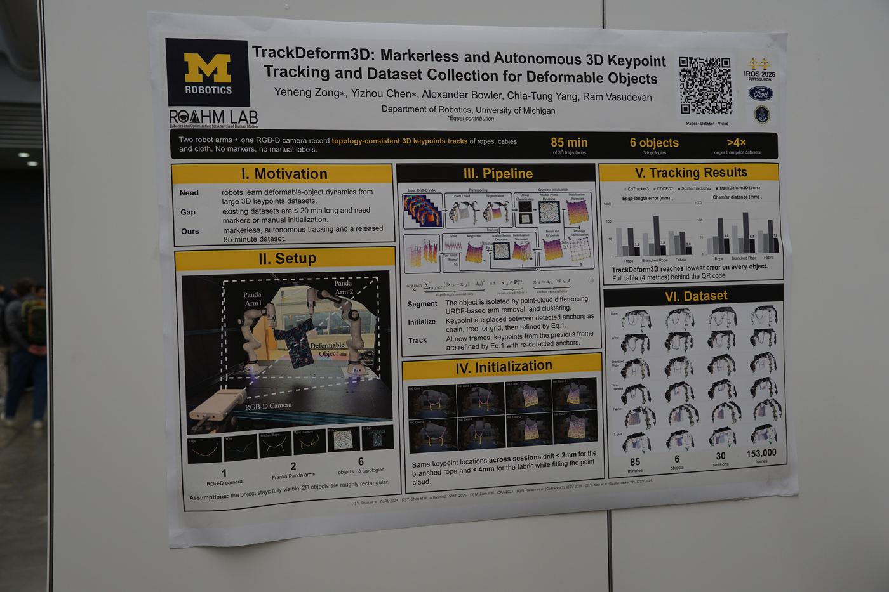
Markerless 3D keypoints on ropes and cloth with two Franka arms and one RGB D camera.
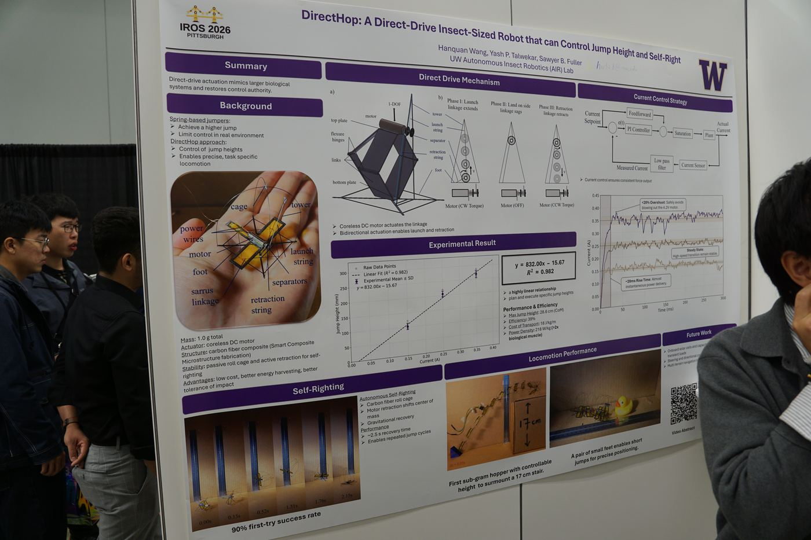
A one gram direct drive insect that chooses jump height and self rights.
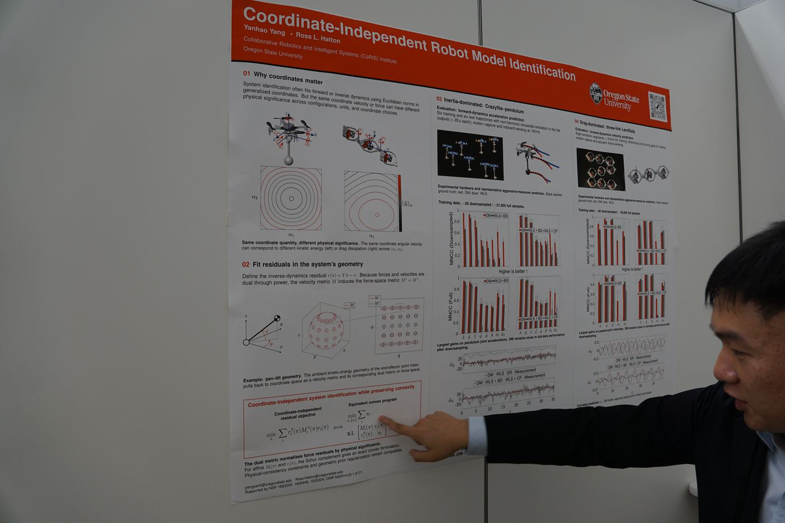
Yanhao Yang and Ross L. Hatton on system identification that does not depend on which coordinates you picked.
Between sessions the terrace looks onto the yellow bridges. One lunch was a Primanti Bros sandwich with fries in the sandwich. Wednesday night the conference moved to the Carnegie Science Center for the farewell reception, with IROS logos on black glass and a glowing furnace exhibit in the next room. Steel City still, with better actuators.
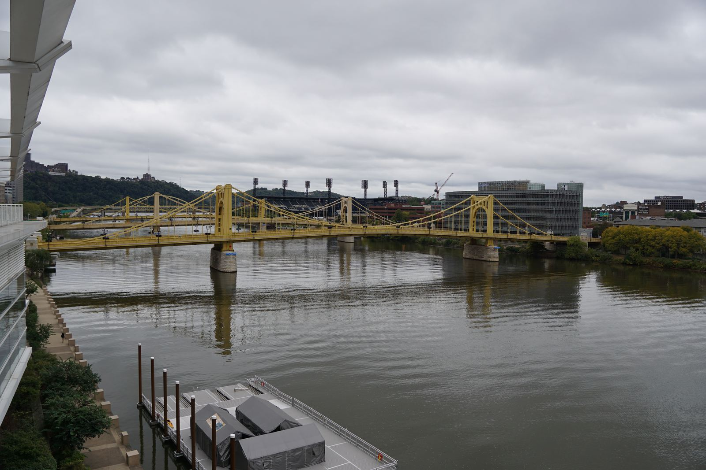
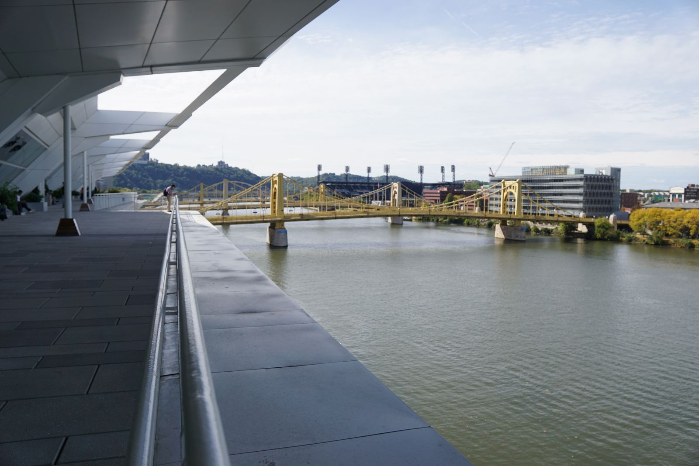
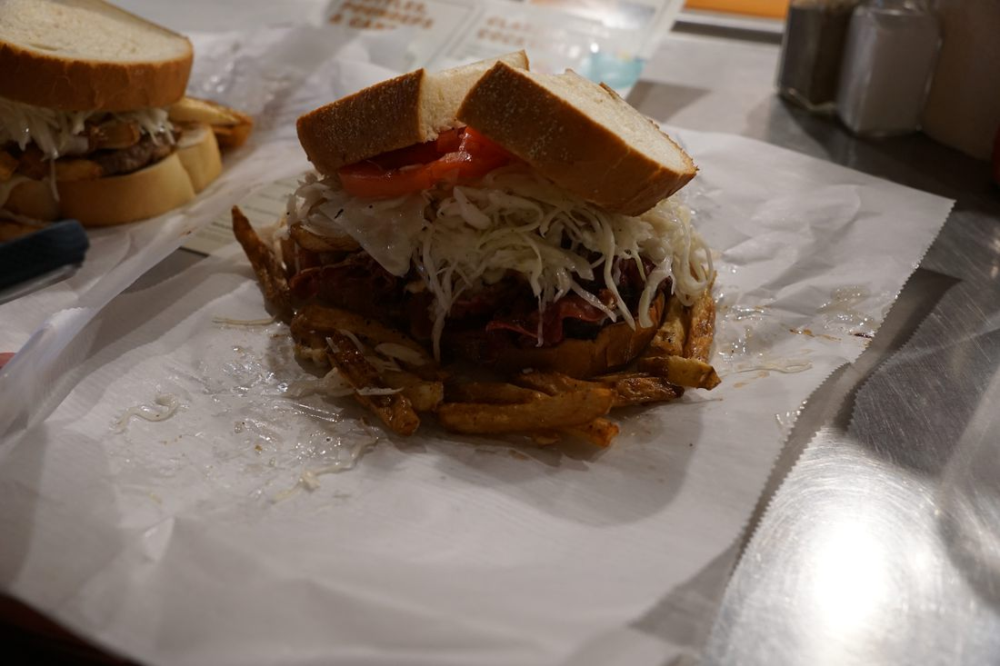
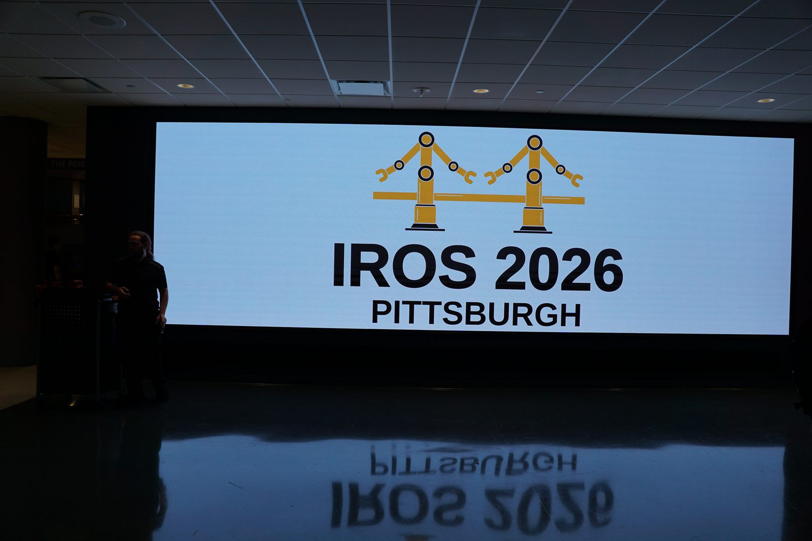